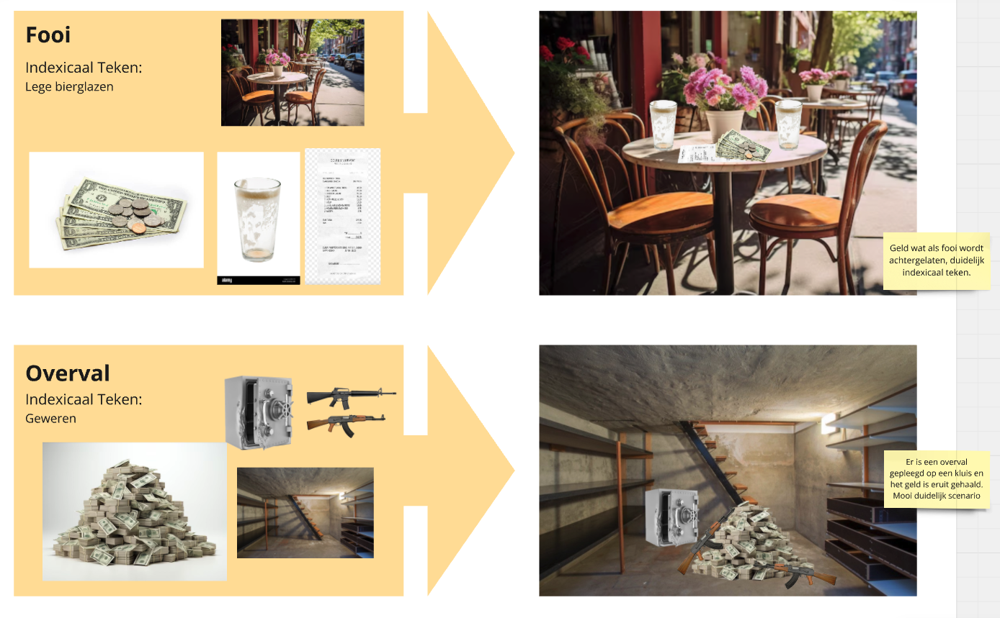
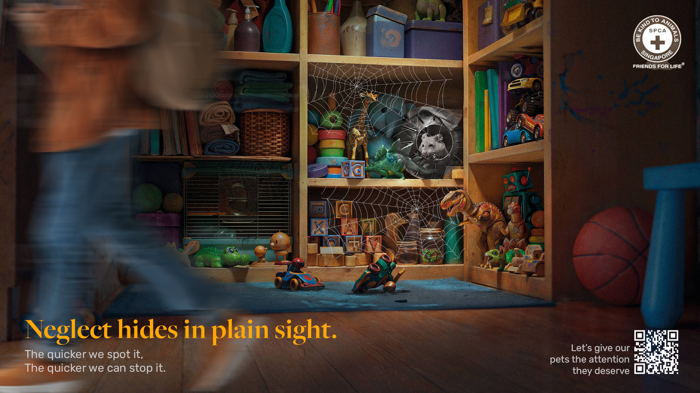

Starting Projects
For the site, I wanted to use a scroll-jacking technique to not only present information in a
progressive disclosure manner but also to make the site more interesting and interactive. Next to
this addition I also added 2 "exercises" in which readers can bring their own input to the table.
Semiotiek Light
In the first element users are presented with two conversations. In it's core, the two conversations
are the same. The only difference between them is the language used. Users can interact by picking
the conversation they feel is the most human and get feedback on their choice.
Visual Rhetorics
This element gives the user a qoute with 2 words that they can change by clicking on the words. Users
will actively change language in this exercise. The word "depression" will be changed into "a sad
and empty feeling" and "social-anxiety" will be changed into "behaviour and emotions when going
outside". Showcasing how easy it is to impactfully change your language.


 Go back
Go back